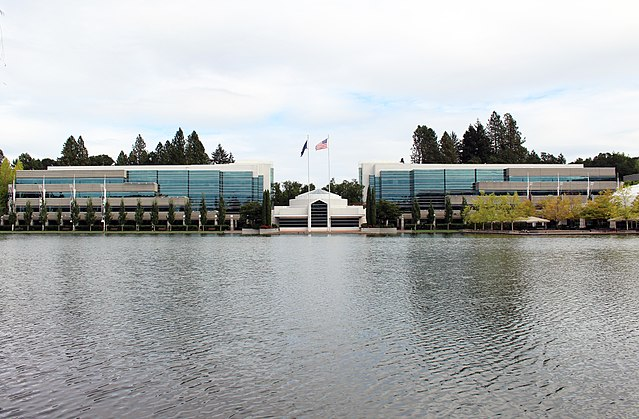

La Jordan Brand (la marque Jordan) a été créée en 1997, en partenariat avec Nike 2. Michael Jordan s'investit personnellement dans cette division qui le représente.La marque est principalement associée à la série des 35 chaussures de basket créées pour le célèbre basketteur jusqu'en 2009.
Le Swoosh, qui est le logo de la firme, n’apparaît plus sur les produits de la marque Jordan à partir de la Air Jordan VII (1992), seul le Jumpman (logo) y figure : cela est le prolongement d'une très lucrative association entre les deux partenaires depuis 1985.
Best sellers : LES JORDAN 1 !
Historique de la marque :
- 1997 :
Création de la Jordan Brand (la marque Jordan)
- 2001 :
Début des éditions « régions exclusives ». En effet, le pack Air Jordan I Japan a été commercialisé dans un seul pays : le Japon.
- 2004 :
La production de Air Jordan I s'arrêta, un an après la retraite de Michael Jordan